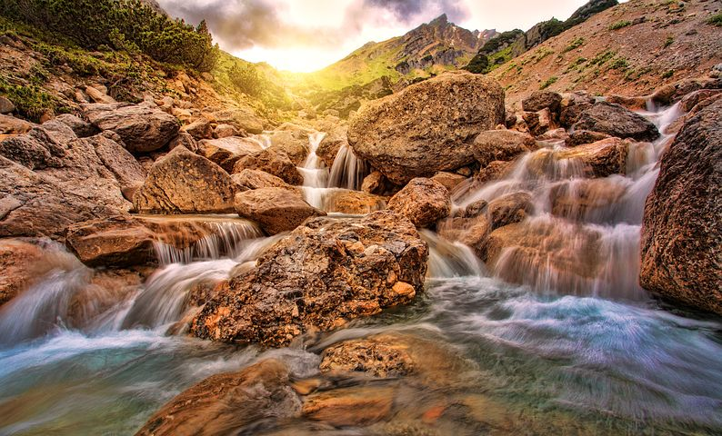

Релакс можна клікати де хочете
Рі́чка (рідше ріка́)
природний водний потік (водотік), який витікає з витоків: джерел чи з озера, болота (рідше), має власне сформоване річище і тече під дією сили тяжіння; живиться поверхневими й підземними водами, з атмосферних опадів свого басейну. Розрізняють річки сталі й сезонні, гірські та рівнинні.
Загальні відомості
Річка характеризується довжиною, шириною, площею басейну, глибиною, падінням, похилом, витратами води і наносів, хімічним складом.
Бохол, Філіппіни. Річками називають природні водотоки, які мають довжину понад 10 км, а коротші — струмками. Річки завдовжки до 100 км, вважають малими, до 500 км — середніми, а понад 500 км — великими.
У кожній річці розрізняють місце її зародження — витік і місце (ділянка) впадання в море, озеро або злиття з іншою річкою — гирло. Естуарій — це вид гирла річки, де річка не утворює дельту, не відкладає формуючого матеріалу. Губи — це один із видів естуарію.
Річки, що безпосередньо впадають в океани, моря, озера або втрачаються в пісках і болотах, називаються головними; ті, що впадають у головні річки, — притоками.
Головна річка зі всіма її притоками утворює річкову систему. Густота річкової мережі — це протяжність (км) усіх річок, поділена на площу (км2) басейну цих річок. Рівнинні річки часто утворюють Меандри - петлі річок, звивини річки.
Поверхня суші, з якої річкова система збирає свої води, називається водозбором або водозбірною площею. Водозбірна площа разом з верхніми шарами земної кори, що включає дану річкову систему і відокремлена від інших річкових систем вододілами, називається річковим басейном.
Річки зазвичай течуть у витягнутих знижених формах рельєфу — долинах, найбільш знижена частина яких, зайнята водним потоком постійно, називається руслом, а частина дна долини, що заливається високими річковими водами під час повеней — заплавою або заплавною терасою. Вище заплави розташовані тераси, що колись були заплавами. Це сліди діяльності вод річок в час, коли річкова долина була мілкішою. Тераси — частини річкової долини, які зазвичай не заливаються водою.
У річищах чергуються глибші місця — плеса і мілководі ділянки — перекати. Лінія найбільших глибин русла утворює фарватер, а лінія найбільших швидкостей течії називається стрижнем.
У місцях виходів твердих гірських порід, які перетинають шлях річки, утворюються пороги. Особливо багато порогів на гірських річках, де річище складене твердими породами, а швидкість течії велика. Падіння води з високого виступу в руслі річки називається водоспадом. Найвищий водоспад на Землі — Анхель (979 м) на річці Чурун (притока Оріноко в Південній Америці).
Різниця висот між витоком і гирлом річки називається падінням річки; відношення падіння річки (або окремих її ділянок) до їхньої довжини називається похилом річки (ділянки) і подається у відсотках (%) або в проміле (‰). Кольдера — це западина в місті витоку, в суходолі.